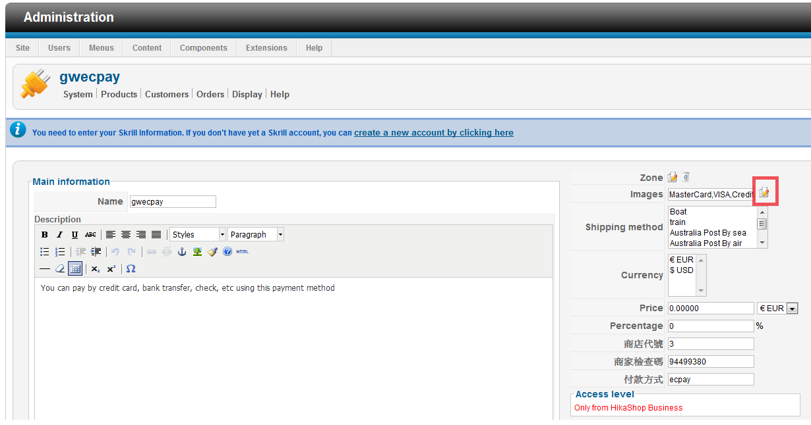
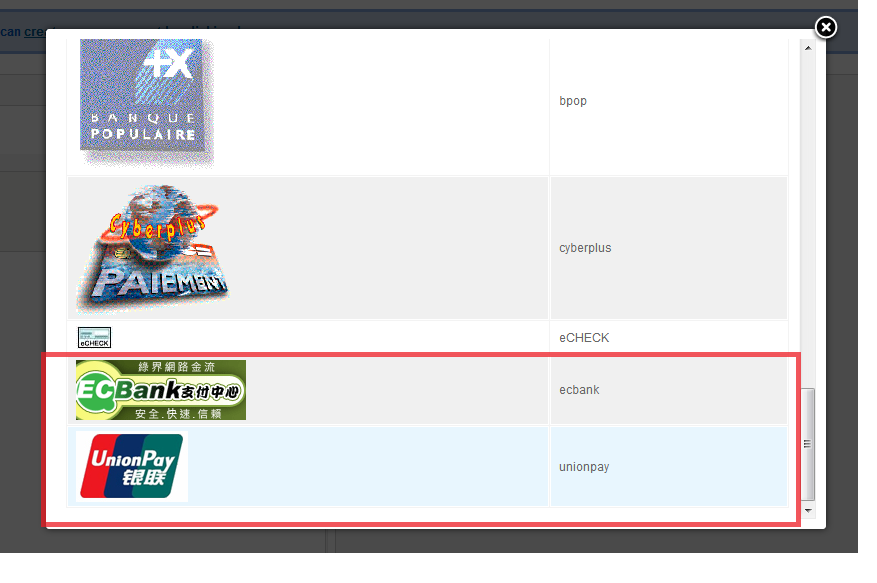
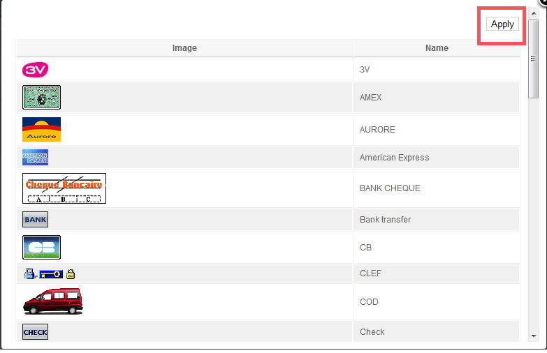
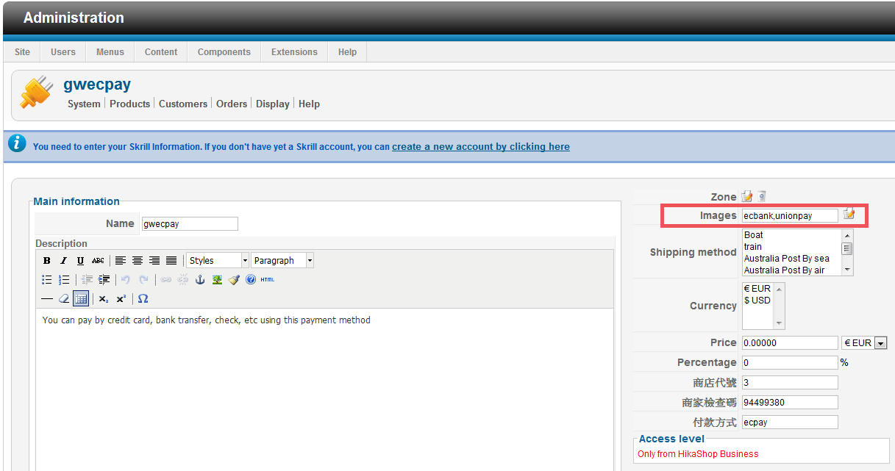

綠界科技線上金流模組安裝教學
Step 3 - 圖檔安裝
1 在伺服器主機上找到路徑 檔案位置\media\com_hikashop\images\payment
2 將 綠界圖檔 資料夾中的圖片檔上傳至步驟1所指的路徑當中
3 此時到管理後台中點選右側屬性欄位中的Images屬性右邊的圖示

4 跳出視窗後向下捲動視窗找到新增的圖檔，並點選圖示來選取

5 向上捲動視窗回到上層按下Apply按鈕

6 確認圖檔名稱後按下存檔鍵完成新增圖檔動作

7 已於前台購物車Check Out畫面裡新增完畢
教學結束
回主選單
若您有任何使用上的疑問歡迎寫信到 services@allpay.com.tw，或至電02-2655-0115 客服部
如果您尚未取得綠界特約商店資格,請來電 02-2655-0115 客服部